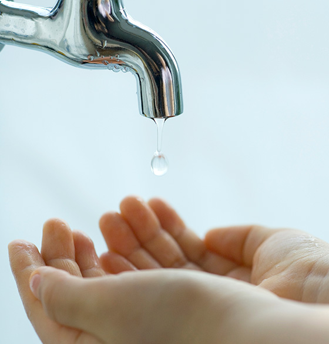

인사말
홈페이지를 방문해주신 여러분을 환영합니다.

케이워터운영관리(주)는 한국수자원공사가 100% 출자하여
설립한 자회사입니다.
저희 회사는 대한민국 물 관리를 혁신해 나가는 모기업과 적극 협력하여 고품질의 물 서비스를 제공하고 국민 물 복지를 실현하는데 함께 하고 있습니다.
존중, 공정, 청렴을 실천하여,
고객이 감동하고 동료애가 넘치는 기업으로 우뚝 서겠습니다.
새로운 사회적 가치를 창출하고 있는 신생기업인 저희 회사에
아낌없는 관심과 사랑을 부탁드립니다.
감사합니다.
케이워터운영관리(주) 사장 전병구
설립한 자회사입니다.
저희 회사는 대한민국 물 관리를 혁신해 나가는 모기업과 적극 협력하여 고품질의 물 서비스를 제공하고 국민 물 복지를 실현하는데 함께 하고 있습니다.
존중, 공정, 청렴을 실천하여,
고객이 감동하고 동료애가 넘치는 기업으로 우뚝 서겠습니다.
새로운 사회적 가치를 창출하고 있는 신생기업인 저희 회사에
아낌없는 관심과 사랑을 부탁드립니다.
감사합니다.
케이워터운영관리(주) 사장 전병구